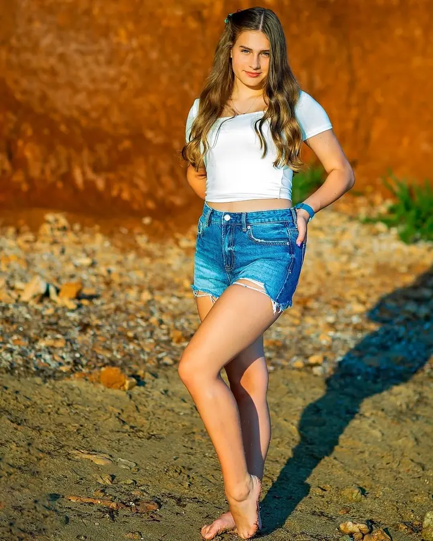
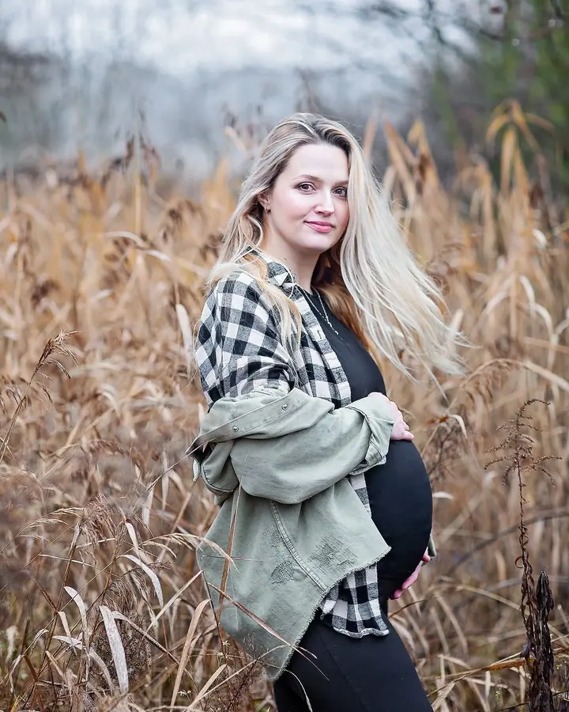
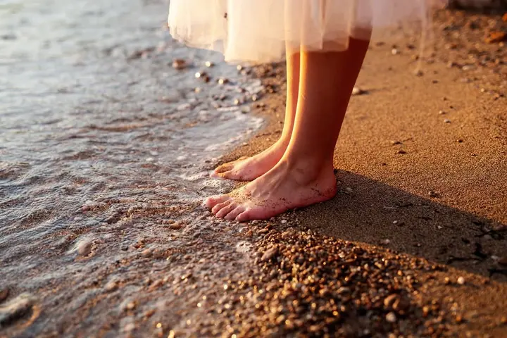

Ženský portrét
Ženský portrét pro mě není o dokonalém make-upu a vypracovaném těle, ale o tom, co je ve vás skryté. Fotím ho v klidu a krok za krokem, abyste se na fotkách poznala.

Jmenuji se Monika Menke a fotím portréty, hlavně ty ženské. Najdete mě u Mladé Boleslavi a ve Staré Lysé, a kdykoli můžu, mizím do Chorvatska, kde fotím v Zadaru a na os…
Rezervovat termínFotografie mě vždycky fascinovala a jako většina fotografů jsem si vyzkoušela různé žánry. Nejvíc mi ale k srdci přirostl portrét, a to především ženský.


Samy sebe často hodnotíme velmi kriticky a přehlížíme to, co je v nás skryté a co je naší podstatou. Ženský portrét v mém pojetí není o dokonalém make-upu a vypracovaném těle. Fotografie je pro mě zrcadlení emocí, výsledek rozhovoru mezi fotografem a fotografovaným a odraz toho, co v každodenním shonu zůstává stranou.
Věřím, že skrz moje oči znovu uvidíte a objevíte samu sebe. Děkuji vám za důvěru a těším se na naše setkání.
Co fotím
Ženský portrét pro mě není o dokonalém make-upu a vypracovaném těle, ale o tom, co je ve vás skryté. Fotím ho v klidu a krok za krokem, abyste se na fotkách poznala.
Léto, moře a slunce v Zadaru nebo na ostrově Vir, na pláži nebo v uličkách starého města. Fotím při východu i západu slunce, od jara do podzimu, případně podle domluvy.
Portréty fotím i dětem a celým rodinám, venku v přírodě a bez strojeného pózování. Na fotkách máte zůstat sami sebou.
Postup
Probereme, jak bude focení probíhat, co si vzít na sebe, záměr fotek i místo. Společně vybereme vhodný balíček z aktuální nabídky.
Můžete si objednat vizážistku, většinou ale stačí make-up a úprava, na kterou jste zvyklá. Hodně záleží na tom, jaké fotky chceme.
Nemusíte mít strach, pomalými a cílenými kroky se dopracujeme k výsledku, který chcete. Přibalte si hlavně dobrou náladu.
Galerii s náhledy vám pošlu do zaheslované galerie ještě v den focení. Vybrané fotky upravím a vytisknu do 14 dní a předám vám je zabalené jako dárek, digitální verze posílám elektronicky.
Otázky
Ano, nemusíte mít strach. Budu vás vést pomalými, cílenými kroky, dokud se nedostaneme k výsledku, po kterém toužíte.
Není to nutné. Můžete si objednat služby vizážistky, ale většinou postačí domácí make-up a úprava, na kterou jste zvyklá.
Náhledy vám pošlu do zaheslované galerie v den focení. Úprava a tisk vybraných fotografií trvá do 14 dní.
Retušuji jemně a s respektem, do fotky zasahuji minimálně. Neupravené fotografie neposkytuji.
V Zadaru nebo na ostrově Vir, na pláži nebo v uličkách starého města, při východu i západu slunce. Od jara do podzimu, případně podle domluvy.